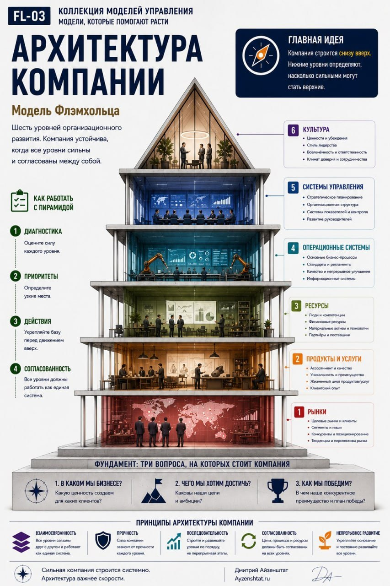
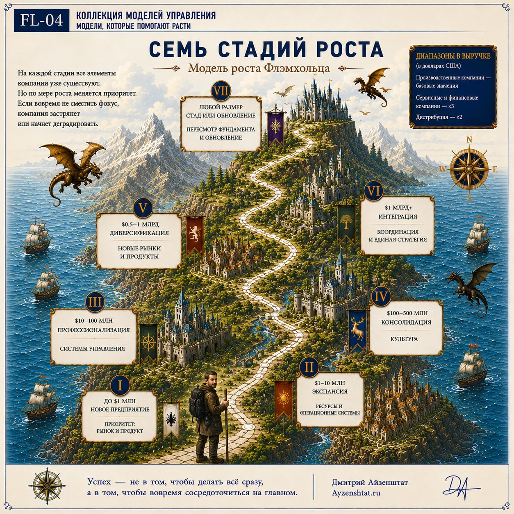
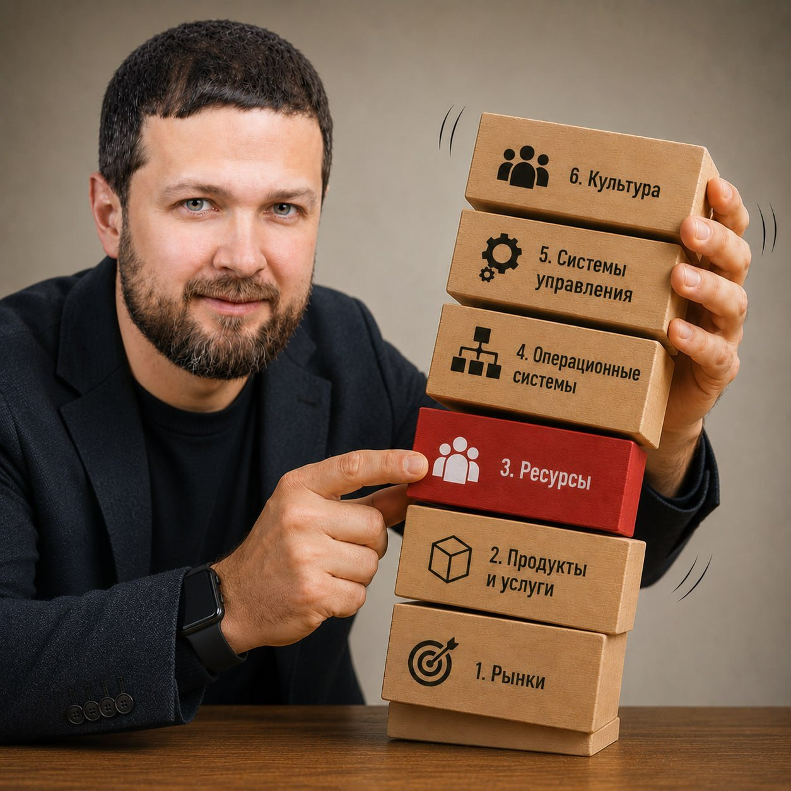

Архитектура роста: компания, способная пройти путь от $1 млн до $1 млрд
Рост принято считать наградой: выросли — значит, всё делаем правильно. На практике рост — это в первую очередь нагрузка. Каждый новый масштаб предъявляет к компании требования, которых вчера не было, и конструкция, которая отлично держала 500 миллионов выручки, на полутора миллиардах начинает трещать. Не потому, что люди стали хуже работать, — потому, что компанию не достроили под новый размер.
Я вижу это в работе постоянно. Собственники формулируют проблему по-разному. Один говорит про операционку, из которой не выбраться. Другой — про то, что планы есть, а исполнения нет. Третий — про хороших людей, которые почему-то не приживаются. Четвёртый — про растущие продажи при стоящей на месте прибыли.
Со временем я перестал воспринимать это как разные задачи. Обычно их и лечат по отдельности — собственнику тайм-менеджмент, менеджерам тренинг, продавцам новая мотивация — и обычно это не помогает. Потому что это не разные проблемы, а симптомы одной: устройство компании отстало от её размера.
Лучшее объяснение этого механизма я нашёл у Эрика Флэмхольца, профессора Калифорнийского университета в Лос-Анджелесе. Адизес дал бизнесу язык для обсуждения проблем роста. Грейнер показал, что кризисы неизбежны. Флэмхольц ответил на главный вопрос: что конкретно нужно строить, чтобы компания проходила через кризисы и продолжала расти.
Пирамида развития: компания как система
Флэмхольц предлагает смотреть на компанию как на систему, где всё связано. Для наглядности — в виде пирамиды. У неё есть фундамент и шесть уровней. Они строятся один на другом, и каждый следующий опирается на предыдущий.

Фундамент — три ответа, на которых держится всё:
- В каком мы бизнесе?
- Чего хотим достичь и к какому сроку?
- Как именно победим?
Если этих ответов нет — пирамида не стоит.
Шесть уровней, снизу вверх:
- Рынки. Кто наши клиенты, каковы их потребности.
- Продукты и услуги. Что мы предлагаем, в чём наше преимущество.
- Ресурсы. Люди, деньги, оборудование.
- Операционные системы. Учёт, склад, закупки, логистика, ИТ.
- Системы управления. Планирование, структура, контроль, развитие руководителей.
- Культура. Ценности и нормы, по которым люди реально действуют.
Ключевой принцип: пирамида строится снизу вверх. Нельзя выстроить системы управления, если нет ресурсов. Бессмысленно автоматизировать процессы, пока не определились с рынком и продуктом. Слабый нижний уровень рушит всё, что выше.
Как система меняется с ростом
Флэмхольц выделяет семь стадий развития, привязанных к выручке. Диапазоны в долларах, для производственных компаний — базовые. Для сервисных и финансовых компаний выручку умножают на 3, для дистрибуции — на 2.

Важно: на каждой стадии все уровни пирамиды в компании уже есть. Но приоритеты меняются — фокус смещается на ту ступень, которая становится критичной для дальнейшего роста. Если фокус не сдвинуть вовремя, компания застрянет или развалится.
Стадия I. Новое предприятие. До $1 млн
Что происходит. Компания только родилась. Всё держится на одном человеке: он и продавец, и директор, и уборщик. Главное — выжить и создать продукт, который нужен рынку.
Что развивать. Рынок и продукт. Всё остальное — ресурсы, системы, культура — пока преждевременно. На этой стадии компания проверяет, есть ли у неё будущее. Инвестиции в системы управления на этом этапе — пустая трата денег и времени.
Риск. Основатель так увлекается продуктом, что забывает проверить, нужен ли он рынку. Или наоборот — начинает строить «правильное управление» до того, как доказал, что бизнес вообще жизнеспособен.
Роль собственника. Всё решать самому, быть в каждой детали. Это время максимального личного участия. Системы и делегирование — не про эту стадию.
Стадия II. Экспансия. $1–10 млн
Что происходит. Продажи растут, людей становится больше. Появляются первые менеджеры — не потому что «так надо», а потому что одному уже не справиться. Начинают выстраиваться процессы. Пока коряво, пока с ошибками.
Что развивать. Ресурсы и операционные системы. Компания должна построить фундамент для масштабирования: нанять нужных людей (особенно управленцев), настроить учёт, склад, логистику, ИТ.
Почему это критично. Без этого компания захлебнётся ростом. Классический пример — Osborne Computer: выросла до $100 млн за три года и обанкротилась на четвёртый. Учёт был так запущен, что никто не знал, как идут дела. Продажи росли, а компания не понимала, сколько зарабатывает и тратит. Рост съел компанию.
Риск. Основатель продолжает всё контролировать лично, не делегирует, не нанимает профессионалов. Или нанимает, но не даёт им реальных полномочий. Компания растёт, а инфраструктура остаётся на уровне стартапа — и в какой-то момент ломается.
Роль собственника. Учиться делегировать. Нанимать людей сильнее себя в ключевых областях и давать им реальную ответственность. Смещать фокус с «делаю сам» на «строю команду».
Стадия III. Профессионализация. $10–100 млн
Что происходит. Компания перестаёт быть просто «предпринимательской» — она становится профессионально управляемой. Появляются планы, структура, показатели, регулярные встречи. Основатель перестаёт быть центром всех решений.
Что развивать. Системы управления. Это четыре конкретные системы: стратегическое планирование, организационная структура, управление эффективностью (цели, показатели, оценка, награды), развитие руководителей.
Почему это критично. На стадии II компания ещё могла существовать на энергии основателя и первых менеджеров. На стадии III это уже невозможно: слишком много сотрудников, слишком много решений. Нужны правила, по которым компания живёт и работает, даже когда основатель не вмешивается.
Риск. Основатель не готов отпускать контроль — и компания застревает. Или наоборот — строит бюрократию, которая убивает предпринимательский дух. Баланс критически важен.
Роль собственника. Перестать быть центром всех решений. Довериться цифрам и показателям. Построить систему, которая работает без его постоянного участия. Переключиться с «как делать» на «что должно быть сделано».
Здесь сделаю отступление. Именно поэтому модель Флэмхольца стала для меня основной. Не потому что она единственно верная, а потому что большинство компаний, с которыми я работаю, застревают именно на переходе от стадии II к стадии III. Бизнес уже большой, а управляется как маленький. Им нужен не совет «станьте профессиональными» — им нужны конкретные шаги. Флэмхольц их даёт.
Стадия IV. Консолидация. $100–500 млн
Что происходит. Системы уже есть, управление децентрализовано. Компания работает по правилам.
Что развивать. Культуру. Людей слишком много, и они слишком разные, чтобы управлять только через структуры и регламенты. В компании уже несколько поколений сотрудников — есть те, кто никогда не видел основателя. Передавать ценности «из уст в уста» невозможно: их нужно зафиксировать и транслировать через все системы — найм, обучение, оценку, награды.
Риск. Компания становится безликой. Разные подразделения живут по-разному, теряется общая идентичность. Без сильной культуры компания распадается на отдельные феодальные владения.
Роль собственника. Стать главным носителем и транслятором культуры. Уделять время не столько операционке, сколько тому, «как мы здесь живём».
Стадия V. Диверсификация. $0,5–1 млрд
Что происходит. Один продукт обычно довозит до $100–500 млн — дальше нужен новый. Компания ищет новые направления.
Что развивать. Новые рынки и продукты плюс способность генерировать инновации внутри. 3M вырастила Post-it внутри компании, потому что умела создавать среду для внутреннего предпринимательства.
Роль собственника. Переключиться с управления текущим бизнесом на поиск новых возможностей. Выступать как стратег, а не как операционный управленец.
Стадия VI. Интеграция. $1 млрд+
Что происходит. Выросшие направления нужно собрать в единое целое, не убив их дух.
Что развивать. Координацию и единую стратегию. Без интеграции компания распадается на набор независимых бизнесов, которые не используют синергию.
Роль собственника. Стать архитектором целого. Думать о долгосрочной устойчивости, а не о текущих результатах отдельных бизнесов.
Стадия VII. Спад или обновление. Любой размер
Что происходит. Компания либо перестраивается, либо угасает. Причины — инерция, насыщение рынка, устаревшая культура, новые технологии.
Роль собственника. Признать, что старые рецепты больше не работают. Пересмотреть фундамент: «в каком мы бизнесе, чего хотим, как победим». Быть готовым к радикальным изменениям — даже если это означает отказ от того, что приносило успех раньше.
Откуда берутся «боли роста»
Когда какая-то ступень пирамиды не поспевает за ростом, возникают симптомы — те самые, с которых я начал статью. Это признаки одного: устройство компании отстало от её размера. Какая-то ступень не выдержала нагрузки, и система дала сбой.

У Флэмхольца есть два инструмента диагностики. Первый — оценка каждой ступени по шкале от 1 до 5. Второй — опросник на боли роста. Результат показывает, какая ступень отстаёт и что чинить в первую очередь.
Дальше — главное правило: лечить снизу вверх, начиная с самой нижней слабой ступени. Хочется начать с верхней — она обычно болит громче. Но пирамида строится снизу: если фундамент слабый, всё построенное выше рухнет. Перепрыгивать нельзя.
Как я это применяю
Флэмхольц даёт очень системный взгляд на устройство и развитие компании: по мере роста компания усложняется, и все ступени должны развиваться, чтобы выполнять свои роли в новых, более сложных условиях. Если какая-то отстаёт — возникают боли, сигналы, что этот уровень нужно достроить.
Моя диагностика устроена так же. Сначала я определяю, на какой стадии роста находится компания. Потом смотрю, где возникают боли — какая система не поспевает. И только после этого выстраиваю работу — с самого нижнего слабого уровня, потому что без него всё остальное не держится.
Я подготовил тест на основе методологии Флэмхольца. Пять минут — и вы увидите, как себя чувствует ваша компания: какие уровни в порядке, а какие пора достраивать.
Подробный разбор модели — в визуальном гиде «От предпринимательского хаоса к устойчивой организации».
Источники: Eric G. Flamholtz, Yvonne Randle, Growing Pains: Building Sustainably Successful Organizations.